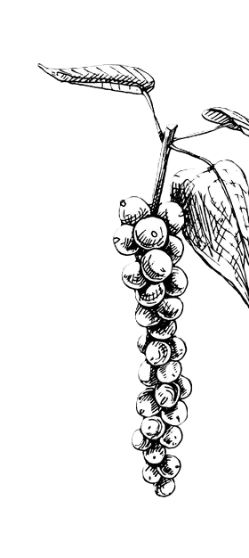

Black
Pepper
The high ranges of Idukki are known for top-quality spices, especially pepper. Grown at higher elevations, it offers stronger flavor, richer aroma, and higher oil content, making our indigenous varieties truly exceptional.

